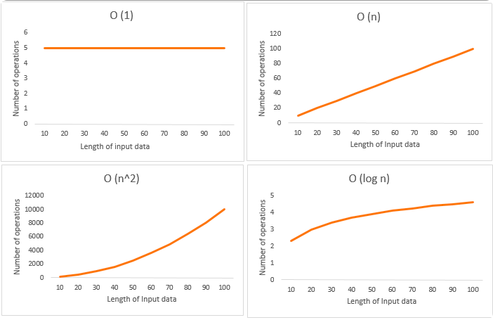
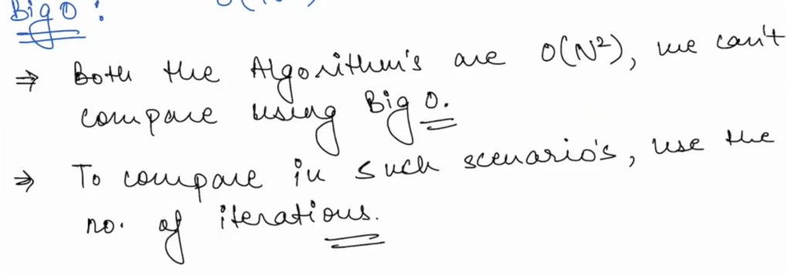
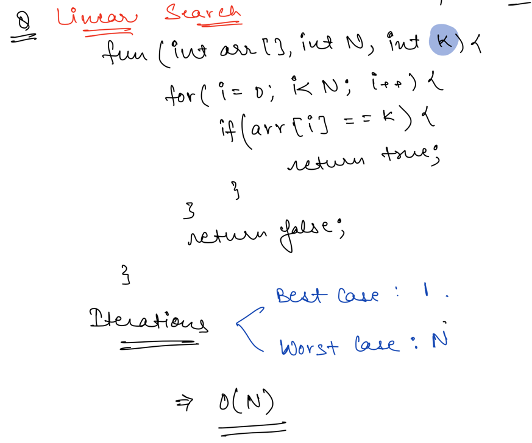
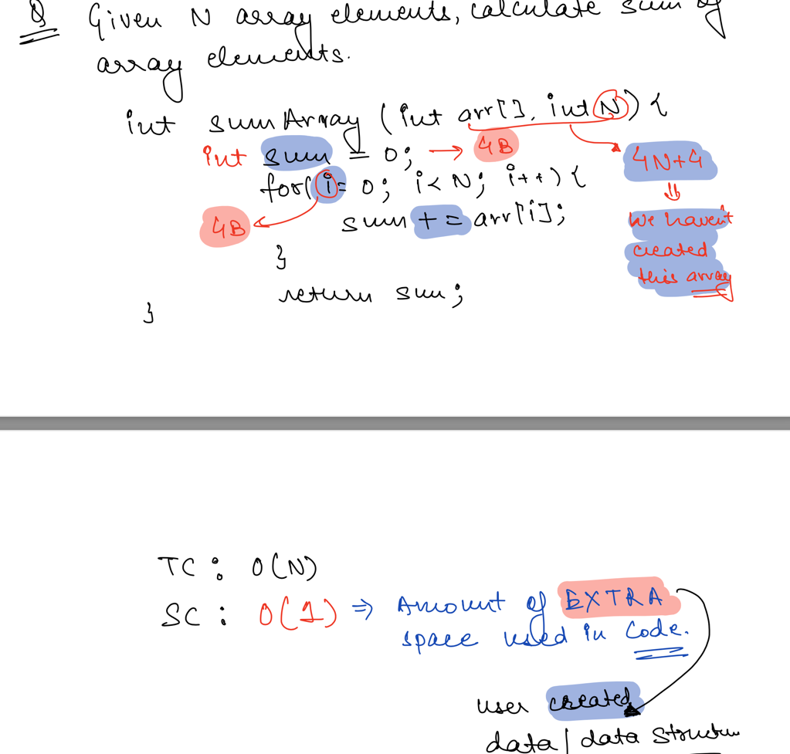
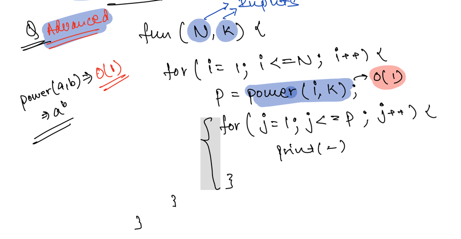
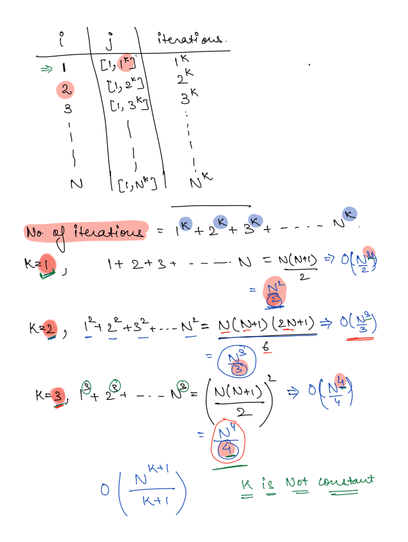

Time and space complexity
Time & Space Complexity with Big(O) Notation - Asymptotic Analysis¶
Time complexity is the amount of time taken by an algorithm to run, as a function of the length of the input. It measures the time taken to execute each statement of code in an algorithm.
Space and Time define any physical object in the Universe. Similarly, Space and Time complexity can define the effectiveness of an algorithm.
While we know there is more than one way to solve the problem in programming, knowing how the algorithm works efficiently can add value to the way we do programming. To find the effectiveness of the program/algorithm, knowing how to evaluate them using Space and Time complexity can make the program behave in required optimal conditions, and by doing so, it makes us efficient programmers.
Type of TimeComplexity¶
- Constant time – O (1)
- Linear time – O (n)
- Logarithmic time – O (log n)
- Quadratic time – O (n^2)
- Cubic time – O (n^3)
- Complex notations like Exponential time, Quasilinear time, factorial time, etc. are used based on the type of functions defined.

Asymptotic Analysis¶
Performance of your Algorithm for very large input, used to describe the running time of an algorithm - how much time an algorithm takes with a given input, n.
- Big O
- Omega (Ω)
- Theta (Θ)

Space Complexity¶
Used to determine the extra space used in a Program.
- Char - 1 Byte
- Float - 4 Bytes
- Int - 4Bytes
- Long - 8Bytes
- double - 8Bytes
Size of char:1byte
Size of int:4bytes
Size of short int:2bytes
Size of long int:8bytes
Size of signed long int:8bytes
Size of unsigned long int:8bytes
Size of float:4bytes
Size of double:8bytes
Size of wchar_t:4bytes
- Linear Search

- Problem 1

- Problem 2(Advanced)


Time Limit Exceeded(TLE)¶
Your Code is taking more than expected time. Solution: Reduce number of Iterations(Optimization)
Tips & Tricks¶
- Use https://www.desmos.com/calculator for graphical view
- It doesnt matter where your code in running (env, devices), We can say that it is right to compare the number of iterations instead of execution time. as number of iteration is going to stay the same across env, devices.